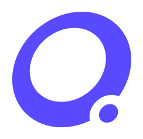
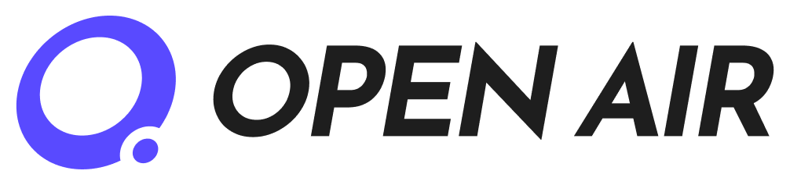

OpenAIR 智研星河
让 AI 在完整科研闭环中推进科学发现 —— 人始终掌握决策，证据全程可核验
已在 晶体材料发现薄膜制备寻优更多科学场景 得到验证 · 场景由 skill 扩展
OpenAIR 把「科研怎么做」建模为可编排、可验证、可追溯的四阶段过程模型，而非一条写死的流水线
平台能力领域无关，材料发现与制备是当前完成全链路验证的场景；更多领域通过新增 skill 接入
从目标性能出发，候选生成 → 进化搜索 → 计算验证（VASP 能带 / 稳定性）全链路自动推进，产出带数据支撑的候选清单与分析报告。
文献证据结构化 → 制备参数推荐 → 湿实验制备 → 结果反馈再设计的四轮迭代闭环，最大压电性能持续提升。
四阶段是组织框架而非固定串行：新的计算结果或实验反馈可触发回到相关阶段补充分析，人在工作台确认方案与关键决策。
任务、产物、能力调用与来源版本全程留痕，任意结论可沿证据链回溯核验；回放（replay）让任何人在零密钥下复现同一过程。
200+ Markdown 形态科研 skill（契约化输入输出），registry 统一注册；新领域 = 新增 skill 包，平台无需改代码。
# 方式 B：openair CLI pipx install openair-cli openair up # 克隆 → 配置（随机密钥+管理员）→ 启动 → 打开浏览器 # 方式 C：Docker git clone https://github.com/pdl-openair/OpenAIR.git cd OpenAIR && cp .env.example .env docker compose up -d --build # 工作台 http://localhost:8080 · API http://localhost:8000/health